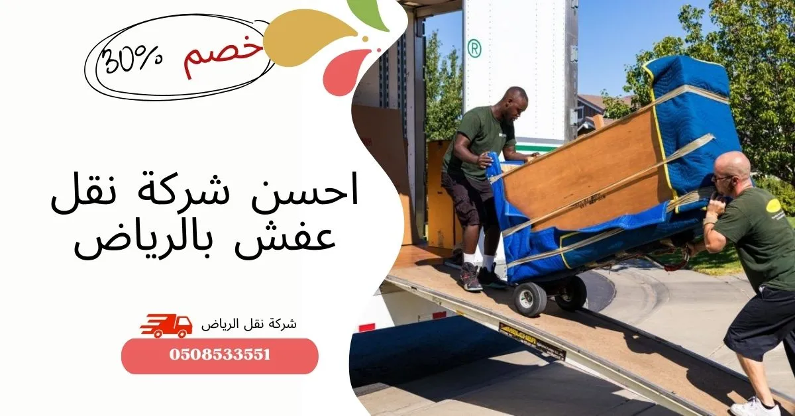

احسن شركة نقل عفش بالرياض 2025

عندما يتعلق الأمر بنقل العفش بالرياض، يسعى الكثيرون إلى العثور على شركة ذات سمعة ممتازة توفر خدمات عالية الجودة وبأسعار تنافسية في هذا السياق، تعد احسن شركة نقل عفش بالرياض من أفضل الخيارات المتاحة، فهي تتمتع بسمعة طيبة وخبرة طويلة في مجال نقل الأثاث، مما يجعلها الخيار الأول للأفراد والعائلات الذين يبحثون عن خدمات موثوقة، مع فريق من المحترفين المدربين، وخدمات شاملة تضمن لك الراحة والأمان، تقدم الشركة تجربة نقل استثنائية.
احسن شركة نقل عفش بالرياض
تعتبر شركة نقل الرياض واحدة من أبرز وافضل شركات نقل الاثاث في السعودية، حيث تتميز بتقديم خدمات مهنية وعالية الجودة لجميع عملائها، حيث تتمتع الشركة بسمعة قوية بفضل سنوات من الخبرة في مجال النقل، مما يجعلها الخيار الأمثل للأفراد والعائلات الذين يبحثون عن خدمات نقل أثاث موثوقة وآمنة، تقدم الشركة حلولاً شاملة تشمل فك وتركيب الأثاث، تعبئة وتغليف آمن للقطع الثمينة، بالإضافة إلى خدمات التخزين المؤقت في حال الحاجة إليها، كما أن فريق العمل المتخصص في نقل الرياض يتمتعون بالمهارة والدقة، مما يضمن أن يتم نقل الأثاث بأمان دون أي ضرر، كما أن الشركة توفر أسعاراً تنافسية وخدمات نقل مرنة تناسب جميع الاحتياجات. إذا كنت تبحث عن الراحة والأمان في نقل أثاثك، فإن نقل الرياض هي الخيار الأمثل لك.
شركات نقل العفش بين مدن المملكة
إذا كنت تريد الحصول على خدمة شركات نقل العفش بين مدن المملكة، التي تتمتع بأهمية كبيرة خاصةً بالنسبة للأشخاص الذين يخططون للانتقال من مدينة إلى أخرى مثل نقل اثاث من مكة للرياض، حيث أن نقل الأثاث بين المدن يتطلب جهدًا كبيرًا ومهارات خاصة لضمان أن يتم النقل بأمان ودون أي خسائر، بالإضافة إلى شركات نقل العفش المتخصصة مثل نقل الرياض تقدم خدمات ممتازة لهذا الغرض، حيث تضمن لعملائها أن الأثاث يصل إلى وجهته بسلامة ودون أن يتعرض للتلف، كما تتضمن هذه الخدمات تخطيط النقل وتنظيم الوقت بشكل مثالي، بالإضافة إلى استخدام مواد تعبئة عالية الجودة لتوفير أقصى درجات الأمان.
يجب على احسن شركة نقل عفش بالرياض أن تواكب تطور تقنيات النقل والتغليف لضمان أفضل خدمة، مثل شركتنا التي تقوم بتوظيف فرق متخصصة في فك وتركيب الأثاث، وتحرص على استخدام أدوات ومواد متطورة تمنع أي تلف للأثاث أثناء النقل، كما توفر الشركة لعملائها ضمانات على الأثاث المنقول لتوفير راحة البال، الأسعار التنافسية والتعامل السلس مع العملاء هما من أبرز مميزات هذه الشركات، مما يجعلها الخيار الأمثل للانتقال بين المدن في المملكة.
افضل شركة نقل عفش خارج الرياض
عندما تبحث عن أفضل شركة نقل عفش خارج الرياض، من الضروري أن تختار شركة تتمتع بخبرة واسعة في مجال النقل وتوفر خدمات شاملة لضمان أن يتم نقل الأثاث بأمان وفعالية، وهذه الشركات مثل شركة نقل الرياض التي تعد من الخيارات المثالية في هذا المجال، حيث توفر خدمة نقل عفش إلى مختلف المدن في المملكة بأعلى مستويات الأمان والاحترافية، يتميز فريق العمل بالمهارة في فك وتركيب الأثاث باستخدام معدات حديثة ومواد تغليف عالية الجودة تحمي الأثاث من التلف أثناء عملية النقل، كما تقدم الشركات المتخصصة في هذا المجال خيارات مرنة من حيث الأسعار، مع ضمانات على سلامة الأثاث المنقول بالإضافة إلى ذلك، تقوم هذه الشركات بتحديد مواعيد مرنة تلائم احتياجات العملاء، مما يسهم في تسهيل عملية النقل بشكل كبير، مع الشركات المتخصصة يمكن للمستخدمين الاعتماد على خدمة نقل سريعة وآمنة بعيدًا عن القلق.
ارخص شركة نقل اثاث بالرياض
إذا كنت تبحث عن ارخص شركة نقل عفش بالرياض، فإن هناك العديد من الشركات التي توفر خدمات نقل بأقل الأسعار مع ضمان جودة الخدمة، حيث تتمثل إحدى الخيارات الممتازة في الشركات التي تقدم خدمات نقل أثاث بأسعار تنافسية،والتي تشتهر بتقديم عروض مميزة للعملاء مع الحفاظ على مستوى عاليً من الجودة.
تتم عملية نقل الأثاث في احسن شركة نقل عفش بالرياض بشكل احترافي، حيث يبدأ الفريق المحترف بتقييم حجم الأثاث وعدد القطع المراد نقلها، ثم يتم استخدام مواد تغليف متينة تحمي الأثاث من أي تلف أثناء النقل بعد ذلك، يتم تفكيك القطع الكبيرة بعناية، مع ضمان عدم تعرضها لأي أضرار، ثم يتم تحميلها على سيارات مجهزة خصيصًا لهذا الغرض، كما يتم تحديد مواعيد مرنة للنقل وفقًا لاحتياجات العميل مما يضمن الراحة وسهولة التنفيذ بالإضافة إلى ذلك، تقدم هذه الشركات خيارات متعددة تشمل التأمين على الأثاث أثناء النقل لضمان سلامته بشكل كامل.
نقل عفش شمال الرياض
نقل العفش في شمال الرياض يعد من الخدمات الأساسية التي يبحث عنها العديد من السكان والمقيمين في هذه المنطقة، وبما أن شمال الرياض يشهد تزايدًا في عدد السكان والمشروعات السكنية، تزداد الحاجة إلى شركات نقل العفش المتخصصة لتلبية متطلبات الأفراد والعائلات عند الانتقال إلى أماكن جديدة، لذلك تعد أهمية نقل العفش في هذه المنطقة كبيرة، فـ هو يشمل خدمة فك وتجميع الأثاث وتغليفه بطريقة آمنة لضمان عدم تعرضه لأي تلف أثناء النقل.
تتمثل أهمية الخدمة في توفير الوقت والجهد على العملاء، خاصة عند نقل الأثاث الثقيل أو الهش مثل الزجاج والقطع الفاخرة، كما أن هذه الخدمة تساهم في تسهيل الانتقال بين المنازل أو المكاتب، حيث تقدم شركات النقل حلولًا مرنة ومناسبة لجميع الاحتياجات، ومع الالتزام بأعلى معايير الأمان والاحترافية تضمن شركات النقل في شمال الرياض سلامة الأثاث من البداية حتى النهاية.
دينا نقل عفش بالرياض
عند التفكير في نقل الأثاث في الرياض، تعتبر شركات النقل التي توفر دينا من الخيارات المثالية لضمان عملية نقل آمنة وفعالة، توفر هذه الشركات وسائل نقل مجهزة خصيصًا لنقل الأثاث الثقيل والضخم، مما يقلل من مخاطر التلف أو الضرر أثناء العملية، من خلال التواصل مع ارقام دينا لنقل العفش يمكن نقل قطع الأثاث الكبيرة مثل الأرائك، الأسرة، والخزائن بسهولة إلى أي مكان في الرياض، حيث تعمل شركات النقل على تحديد احتياجات العميل وتوفير دينا بأحجام متنوعة، مما يضمن أن تتناسب مع حجم الأثاث المراد نقله لذلك، يعد اختيار شركة نقل توفر دينا من الأمور الضرورية لضمان نقل أثاثك بأمان ودون أي مشاكل.
الأسئلة الشائعة حول احسن شركة نقل عفش بالرياض
ما هي مهام نقل شركة عفش الرياض؟
تعد عملية نقل الأثاث من أو إلى أي منطقة في الرياض، التي تشمل العديد من الأحياء السكنية والتجارية، تتطلب هذه العملية خطة محكمة لضمان أن يتم النقل بأمان وكفاءة، حيث تتمثل أهمية هذه الخدمة في تسهيل عملية الانتقال للعديد من الأسر والشركات، مما يساعدهم على الانتقال إلى منازل أو مقرات جديدة دون أي عناء، تشمل خدمات نقل العفش في شرق الرياض عادةً تغليف الأثاث بشكل جيد لحمايته من التلف، وتوفير وسائل النقل المناسبة مثل الشاحنات أو الدينا، بالإضافة إلى فريق من العمال المدربين الذين يقومون بترتيب الأثاث وتنزيله بطريقة احترافية وآمنة.
ما هي أوقات العمل لدى شركة نقل الرياض؟
توفر شركة نقل الرياض خدماتها طوال أيام الأسبوع، وعلى مدار 24 ساعة لتوفير جميع الخدمات المناسب للعملاء لأن الأهم لدينا هو تلبية حاجة عملائنا وراحتهم، يمكنك التواصل معنا في أي وقت تريده.
في الختام، إذا كنت تبحث عن احسن شركة نقل عفش بالرياض ، فلا بد أن تكون شركة نقل الرياض هي اختيارك الأمثل، فهي تتميز بخدمات نقل آمنة وفعالة مع ضمان حماية جميع قطع الأثاث خلال النقل الشركة توفر لك راحة البال بأسعار معقولة، مع فريق عمل محترف يهتم بكل تفاصيل النقل من البداية إلى النهاية، استمتع بتجربة نقل مريحة وموثوقة مع شركة نقل الرياض.